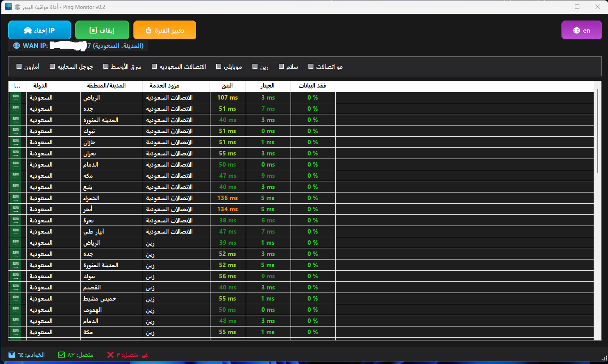
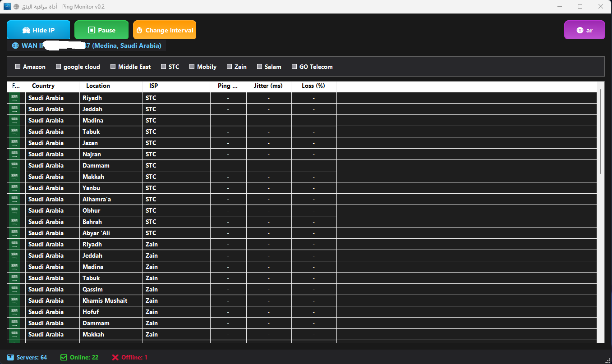

PingMonitor SA.v1 — أداة مراقبة البنق
v1تطبيق ويندوز لقياس البنق والجيتار وفقد البيانات لخوادم متعددة، مع دعم لغتين وعرض أعلام الدول وفرز النتائج.
⬇️ تحميل البرنامجالمزايا
- قياس البنق بشكل دوري مع ألوان دلالية
- حساب الجيتار (Jitter) وفقد البيانات (Loss)
- تبديل اللغة عربي/إنجليزي
- أعلام الدول وصفيحة مزوّدين قابلة للتصفية
- فرز الأعمدة حسب القيم
- أزرار حديثة بواجهة متدرجة ودعم الإيموجي
المتطلبات
- .NET Framework 4.7.2
- ويندوز 10 أو أحدث
إن لم يكن .NET 4.7.2 مثبتًا، ثبّته أولًا ثم شغّل البرنامج.
طريقة الاستخدام
- بعد التشغيل، اختر مزوّد الخدمة من الشريط العلوي
- راقب البنق والجيتار وفقد البيانات في القائمة
- استخدم زر تغيير الفترة لضبط معدل التحديث
- بدّل اللغة من زر 🌐 أعلى اليمين
لقطات الشاشة

